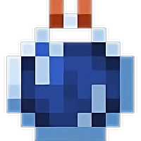

Minecraft Status Effects v1.20/1.20.1
| Mod[1] | Effect | Max Level[2] | Description[3] | Tags |
|---|
1. Some effects are added by multiple mods; in that case, the most popular mod is being shown.
2. Max level means max level obtainable in survival and can differ based on the mods in your modpack.
3. If an effect lacks the exact numbers, it is simply because I couldn't find the formula anywhere.